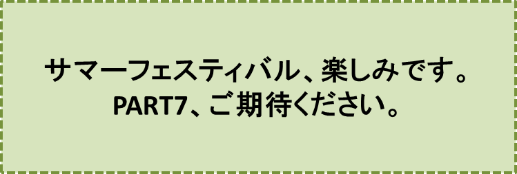

カラスの大王物語-PART6-
『ミィミィ村長』の巻
笠原正雄
村役場の建物は、古代ギリシャのパルテノン神殿を彷彿（ほうふつ）させる白亜の建物で、真夏の太陽にまぶしく輝いています。
一階に、やはり古代ギリシャの音楽会会場のような円形ホールがあって、広い入口が、廊下に向かって開けっぱなしになっていました。外からでも部屋全体を見渡すことができます。
このホールの奥に木製の大きなテーブルがあって、ヒノキの切り株の椅子にミィミィ村長が腰をおろして執務中でした。
島でとれる全ての作物のリストを作ったり、島で繰り広げられる色々のお祭りのスケジュール作りなどで、とても忙しくしています。
ミィミィ村長のご自慢は、まっすぐに伸びた大きな耳です。あまりに大きく伸びましたのでその先端が折れ曲がって、顔のあたりまで垂れ下がってきています。
仕事をし過ぎたためでしょうか。それとも老眼のためでしょうか。顔の半分くらいの大きさの眼鏡を掛けています。ご自慢の垂れ下がった耳が、この眼鏡をしっかり押さえていました。
ミィミィ村長は、垂れ下がった耳の先を両手で何回も撫でた後、おもむろに口を開きました。予想もしなかった意外な言葉です。本当にびっくりです。
「お前さん達が、どうして今、ここに辿りついたのか、私は全て知っていますよ。ほら、この大きな耳を見てごらんなさい。どんな遠くに起こったことでも私の耳は聴きとることができるのです。
カラスの大王様の森の牢屋で、お前さん達がひそひそ話していた内容も全部知っています……。ほっほっほっほっ、ほおー」
と上品に、そして得意そうに笑った後、続けました。
「私は決して盗聴したわけではありません。カラスの大王様がこのあたりで起こったことを全て知り尽くしているようにと、私に特別の力を与えて下さったのです。私は全てのことを知り尽くしておく必要があります。これも仕事のうちなのですよ」
ジローは、どきっとしました。
“あぁ、ここは安全な島ではなかったのだ……。カラスの大王が支配している島なんだ……。
ミィミィ村長からの連絡を受けてこの「不思議の島」におサルさんの機動隊員達が、もうすぐ、やって来るかも知れない……。”
うつむき加減で恐る恐る尋ねます。
「では、僕たちが脱獄したことも全部ご存知なんですね」
ミィミィ村長は、意味あり気に咳払いした後
「勿論、知っていますよ。君たちは、こともあろうに、牢屋から脱獄しましたね。とても大きな罪を犯しましたね。
しかしこの罪を問う前に、予定通り、森の広場で刑が執行されました。この刑の執行で脱獄の罪の方は問われないことになったのですよ」
と優しく笑みを浮かべながら、答えてくれました。
ジローはもうすっかり観念しました。
“だとすると、僕達は今朝、刑を執行されている筈……。あの研ぎ澄まされた斧が振り下ろされた筈なんだ。タマもトラのように黄色と黒の縞模様のネコちゃんになっている筈なんだ。
しかし……、おかしいなぁ。僕たち、少しも変わっていない。ひょっとしたら僕達三人に、あの斧を使った厳しい刑が執行され、いつの間にか、天国に来たのかなぁ。ここはひょっとすると天国の島？？”
ジローは、目をつむり溜息を何度もつきました。今まで経験したこともない感情がジローの胸の中に、ひろがります。
“絶望なの？希望なの？一体どちらなの？”
絶望の暗闇と希望の光とが、ジローの心の中に交互に激しく宿ります。
ミィミィ村長はこんなジローの心の中をすっかり見抜いたのでしょう。大きな眼鏡をしっかり押さえている自慢の耳を、二、三回丁寧に撫でた後、
「刑は、本日正午前、ちゃんと実行されましたよ。可愛そうに、お前さん達の大切なフリスビーに斧が振り下ろされました。
見事、真二つ切断されたフリスビーは、天高く舞い上がって、小さく、小さく、小さくなってどこかに飛んでいったのです……。可愛そうなフリスビーの最期（さいご）でした」
ゴンはこの話に、とても悲しくなって、“くーん”、“くーん”と低いうなり声をあげながら、ジローにもたれかかりました。ゴンにとって大切な遊び仲間であるフリスビーが、処刑されたのですから当然ですよね。
ジローもゴンの姿を見て悲しくなりましたが、ぐっと我慢し、ゴンを優しく撫で続けました。
ミィミィ村長は、続けます。
「タマの刑は、執行猶予ということになったのです。
君達が脱獄した夜、すごい雨でしたね。あの雨で刑場に置いてあった黄色と黒のペンキがすっかり流れてしまい、どうしようもありませんでした。
もしペンキが流れてなかったら、ペリカンのぺー吉とカン子が、黄色と黒のペンキをたっぷりに、あの大きな嘴に含んで、タマをどこまでも追いかけてきて、必ずタマを小さなトラさんにしたでしょう。
タマは、雨の神様に感謝しなさい。神様がタマちゃんの罪を、雨に流して下さったのですよ。これからは、もう二度と再びハッピーに襲いかかったりしないように、気をつけましょうね」
タマは珍しく大人しく、頭を何度も下げました。とにかく感謝しなければならないと思ったからです。
こんな様子を見ていたミィミィ村長は三人を元気づけねばと考えたのでしょう。優しい笑みを浮かべながら
「そうだ！君達にとって、とても良いニュースがあります。
この島の南に、砂浜がとびきり美しい浜辺「南の浜」があり、この浜辺に抱かれるように、まるで湖のように静かな湾が広がっています。この浜辺で明日の夜、サマーフェスティバルが開催されることになっているのですよ。
そうだ、明日の夜、君達のために特別に良い席を用意してあげましょう」
ミィミィ村長は自慢の耳を両手で何回も撫でた後、言葉を続けます。
「湾には沢山の芸達者な魚さん達がやってきて、素晴らしい芸を披露してくれるでしょう。私もフェスティバルを、とても楽しみにしています。
あっ、そうだ。大事なことを忘れていましたね」
とここまで一気に言った後、
「ごらん、このハンコ、立派なハンコでしょ」
と言いながら直径10センチ、長さ20センチぐらいの円柱状のハンコを、得意げに見せました。
「このハンコを私が押せば、誰でも二倍、三倍に大きくなれるのです。明日の夜、浜辺にやってくるお魚さん達はみんな、私がこのハンコをついて大きくしてあげたのですよ」
ジローは、
「大きくなって、特に良いことがあるのかなぁ……。」
と遠慮しがちに、つぶやくように尋ねます。
ミィミィ村長はジローの質問は、少しぶしつけな質問と思ったのか、ムッとした顔をして
「あるに決まっているじゃないですか。大きくなることによって別の世界が開け、好奇心が、一層、満たされるのですから。好奇心は理性、知性の発達に欠かせない栄養素なんです。
大きくなることによって色んな未経験なことが新たに体験できて、世界が思い切り広がっていきます」
ここまで険(けわ)しい顔で一気に言ってしまうと、ミィミィ村長は少し気分が落ち着いたのでしょう。元通りの優しい顔に戻って、言葉を続けます。
「マッコークジラのマッコさんは、大きくなったお蔭で、今までよりも2倍も3倍も深く潜れるようになり、初めて見る沢山の深海のお魚さん達に、挨拶をすることができました。とても楽しかったと言っていました……。
あっ、そうだ、面白い話がありますよ。
イルカのイルキー君は、何倍も早く泳げるようになったので、ある日、思い切って、浜名湖まで行ったのです。そして、何と
“鉄橋を走る『のぞみ号』と競争したんだけど、結構いい勝負だった！”
と得意気に言ってました……。みんな、今までにない経験をして好奇心を満たすのです」
ジローは、なるほどと、思いました。数学の中村先生が
“若者よ。好奇心を抱け！”
とか、繰り返し言っていたことを思い出しました。
ミィミィ村長は、沢山の大切な仕事を中断していたことに、はっと気がついたのでしょう。少し焦った口調で、ジロー達との話を締めくくりました。
「君達は一階にある「サクランボ」という名前の部屋に泊まっていきなさい。
ニワトリのコッコおばさんが、食事の世話など、全ての世話をしますから、安心して今日はお休みなさい。お疲れさま！」
ジロー達は「サクランボ」の部屋で一泊することになりました。
ニワトリのコッコおばさんもダチョウ程の大きさ。ほんとうに何から何までびっくりする大きさです。
夕食は「野菜たっぷりのスパゲティ」でしたが、コッコおばさんは、トマトぐらいの大きさのサクランボを
「特別サービスですよ。“コッ、コッ、コー”、“コッ、コッ、コー”」
と、オペラ歌手のように羽を優しく揺らせ、軽やかに唄いながら、お皿に一つずつ盛ってくれました。
♪♪♪♪コーヒーブレイク♪♪♪♪
